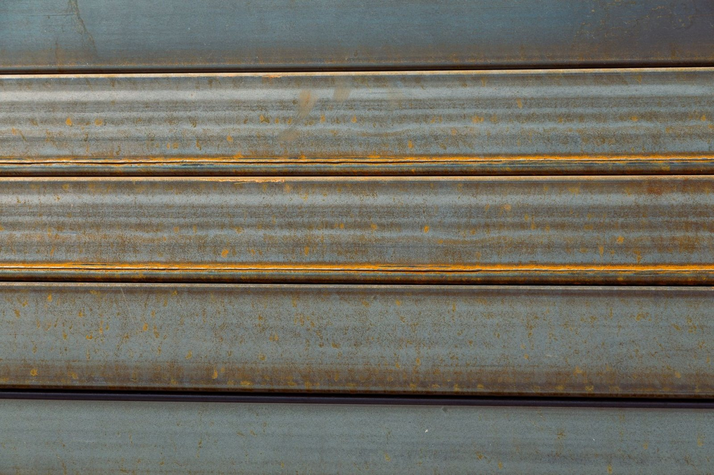
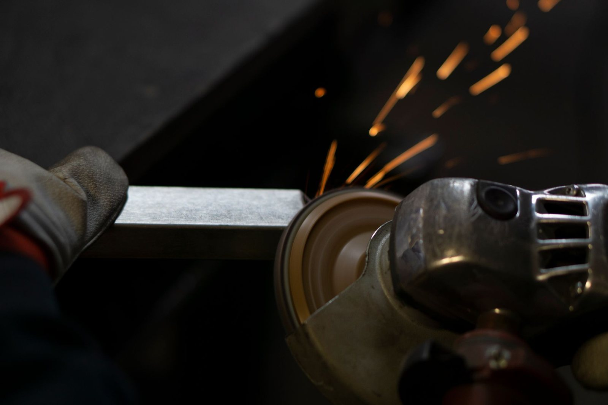

Co oczyszczamy i zabezpieczamy
Element przywozisz do nas, my zdejmujemy rdzę, starą farbę i zgorzelinę, a na czysty metal kładziemy zabezpieczenie. Przed pracą oglądamy element i podajemy cenę.

Piaskowanie elementów metalowych
Strumień ścierniwa zdejmuje rdzę, łuszczącą się farbę i brud aż do gołej stali. Powierzchnia jest szorstka i czysta, więc nowa powłoka dobrze się jej trzyma.

Piaskowanie felg
Felgi stalowe i aluminiowe czyścimy ze starego lakieru i korozji. Po piaskowaniu są gotowe do malowania albo lakierowania.

Części samochodowe i motocyklowe
Wahacze, belki, bębny, zaciski, uchwyty i inne drobne części z remontu albo renowacji auta. Zapytaj telefonicznie o konkretny element.

Elementy przyczep i naczep
Błotniki, dyszle, burty i inne części przyczep oczyszczamy z rdzy przed malowaniem.

Zabezpieczenie antykorozyjne
Świeżo oczyszczony metal szybko łapie rdzę, dlatego po piaskowaniu kładziemy zabezpieczenie. Dzięki temu element spokojnie poczeka na dalszą pracę.

Drobne elementy ogrodzeń i balustrad
Przęsła, furtki, kute ozdoby i inne elementy, które zmieszczą się w naszej kabinie. Wymiary najlepiej podać przez telefon.
Która usługa Cię interesuje?
Zadzwoń, opisz element do oczyszczenia. Podamy cenę i termin.